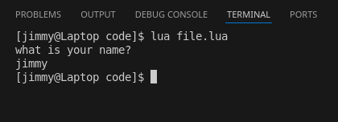

Chapter 1: IO
last updated: 2025-03-25
Some definitions:
- command: a piece of code that does a thing for example
print("hi")is a command that displays hi on the screen
There's no program that doesn't take in input and give output, some common forms are:
- to and from a console window (a traditionally black and white window that can only display text)
- to and from a file
- to and from another program
- to and from a Graphical User Interface (GUI), which is the most common form of Input and output (IO) as of today.
This book will only use console output for any sort of output as it's the easiest and quickest to do, however, maybe further in more complex topics we'll explore the other ways of handling IO.
CONSOLE
Output to a console window
this arguably the easiest way to check if a piece of code is getting reached, it shows output to a window called a terminal emulator, mostly called cmd in windows, and it usually looks like this:

the above picture was the output of the following piece of code
print("hello world") --prints console window output
you might also find them called standard output and input
Input from a console window
Easiest way to get input for a program, input is usually done with a keyboard in an input field and is almost always in text

notice how it's different from output where it ended the program right away? It's waiting asking for input

the above picture was the output of the following piece of code
print("what is your name?") --prints console window output
io.read() --reads console window input
Notice how for each input and output there's one command that does it, that's common among all other languages.
Summary
a quick recap on what this chapter says, there doesn't exist a single viable program that doesn't take input and give output.
Input or output can be a file, gui, another program, or a standard IO (console window)
all languages have at least one command to facilitate input gathering and output display